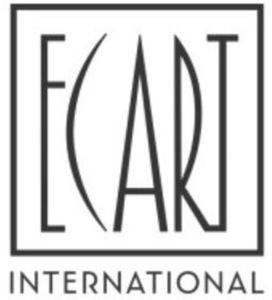

Trade Mark Journal No.2025/015 11 April 2025
WO0000001688182 (11,20,24,27,35)
Office of origin: France
Date of International Registration:13 June 2022
Date of designation in the UK:
3 September 2024

- Class 11
- Apparatus and installations for lighting; lamps; floor lamps; lighting fixtures; ceiling lights; chandeliers; lanterns for lighting; lampshade holders; lamp chimneys; luminous tubes for lighting; apparatus for heating, cooling, steam generating, cooking, drying, ventilating, water distribution.
- Class 20
- Furniture; mirrors (looking glasses); frames; non-metallic storage containers; bone, horn, whalebone or mother-of-pearl, unprocessed or semi-processed; shells; meerschaum; yellow amber, bedding articles, namely, beds, mattresses, bed bases, pillows, bolsters; furniture and furniture parts; office furniture; metal furniture; storage furniture, storage shelves; school furniture; mirrors, furnishing and toiletry mirrors; mirrors; mirrors [looking glasses]; hand-held mirrors [toilet mirrors]; wardrobes; chest wardrobes; cupboards; cupboards; bedside cabinets; racks [furniture]; benches [furniture]; boxes of wood or plastic materials; bookcases [furniture]; cradles; sideboards; desks [furniture]; picture frames; couches; sofa beds, stools, pouffes [furniture], bean bags; sofas; love seats; lockers; chairs [seats]; seats; seats of metal; easy chairs; trolleys [furniture]; chests not of metal; bins [chests] not of metal; cases not of metal; chests, not of metal; dressing tables; chests of drawers; counters; side tables; containers, not of metal [storage, transport]; baskets not of metal; baskets, not of metal; Moses baskets; cushions; tea carts; divans; plate racks [furniture]; hat stands; book rests; umbrella stands; magazine racks; towel stands [furniture]; coat stands; doors for furniture; display stands; standing desks; writing desks; cabinet work; racks [furniture]; bookcase shelves; bookshelves; armchairs; figurines made of wood, wax, plaster or plastic; statuettes of wood, wax, plaster or plastic; statues of wood, wax, plaster or plastic materials; flower-stands [furniture]; straw mattresses; straw mattress; plaited straw except matting; screens [furniture]; table tops; non-metallic trays; bamboo curtains; bead curtains; rattan; rattan; reeds (plaiting materials); indoor blinds [furniture]; tables; stools; trestles [furniture]; curtain rods; plate racks; display racks [furniture], indoor and outdoor furnishings and decorative articles, art or craft objects, for ornamental and decorative use made of wood, wax, rattan, plaster or plastic; mobiles [decoration]; outdoor furniture.
- Class 24
- Textiles and substitutes thereof; curtains of textile or plastic materials; bed blankets; lap robes; bedspreads [bed covers]; cloth for furniture; upholstery fabric; upholstery fabrics; textile materials; fabrics for textile use; fabrics; flannel [fabric]; jersey [fabric]; plastic material [substitute for fabrics]; muslin [fabric]; non-woven textile fabrics; cloth; cloth; velvet; tulle; covers for cushions; pillow shams; bath linen except clothing; bed linen; household linen; table linen not of paper; curtains of textile or plastic materials; net curtains; wall hangings of textile materials.
- Class 27
- Carpets, rugs, mats and matting, linoleum and other materials for covering existing floors; wall hangings not of textile; wall coverings of textile materials; wallpaper, including textile wallpaper.
- Class 35
- Advertising; advertising by mail order; online advertising on a computer network; commercial business administration, organization and management; the bringing together, for the benefit of others, of indoor and outdoor furnishings, excluding the transport thereof, enabling customers to conveniently view and purchase those goods through websites, television shopping programs; advertising, marketing and promotional services; sales promotion for third parties; advertising through sponsorship; sponsorship search; advertising by sponsoring; organization of trade fairs and exhibitions for commercial or advertising purposes; search engine optimization for sales promotion purposes; demonstration of goods; providing commercial information and advice to consumers regarding choice of goods and services; presentation of goods on all communication media, for wholesale; presentation of goods on all communication media for retailing; retail services for indoor and outdoor furnishings; retail store services for interior and exterior decor and furnishings particularly including decorative lighting, lamps, lamp holders, lamp shades, pendant lamps, spotlights, floodlights, bedside lamps, floor lamps, table lamps, wall lights, desk lamps, reading lamps, ambient lighting, string lights, chandeliers, clocks, fireplace clocks, desk clocks, photographs, artistic depictions, art engravings, posters, stands for art objects, pictures, watercolors, paintings, framed or unframed, furniture, mirrors, picture frames, unworked or semi-worked bone, unworked or semi-worked horn, containers [not of metal] for storage or transport, sofas, love seats, chaises longues, sofa beds, stools, pouffes [furniture], ottomans, bean bags, cushions, seat cushions, chair pads, beds, bedside cabinets, chests of drawers, storage drawers [furniture], partitions for drawers, storage boxes [furniture], wooden storage boxes, washstands, mirrors, wall mirrors, mirror frames, hand mirrors, closets, closet doors, wardrobes, chest wardrobes, storage furniture, storage shelves, bathroom furniture, modular bathroom furniture, bathroom stools, napkin holders, freestanding towel racks, bath pillows, kitchen furniture, kitchen units, kitchen cupboards, dish drying racks, dining tables, coffee tables, side tables, end tables, writing tables, console tables, wall-mounted coat racks, umbrella stands, desks, office chairs, filing cabinets with drawers [furniture], bookcases, racks, racks sold in kit form, outdoor furniture, furniture for greenhouses, garden furniture, unworked or semi-worked glass [except glass used in construction], glassware, porcelain and earthenware, china ornaments, ornaments of glass, ornaments of ceramic, figurines of porcelain, figurines of glass, works of art, figurines of wood, vases, vase, vases of glass, flower vases, floor vases, cookware, fabrics and substitutes therefor, household linen, curtains of textile or plastic, bed linen, bed sheets, bedcovers, bed throws, comforters, duvet covers, pillowcases, bed blankets, woollen blankets, children's bed linen, curtains, mats, wall hangings [not of textile], wallpaper; services for awarding loyalty cards, including customer loyalty programs; bill-posting; shop window dressing; services for the provision of goods and services for other businesses; dissemination and administrative management of gift boxes, purchase vouchers, vouchers redeemable for the purchase of goods or services, discount coupons, gift certificates for payment, gift cards for payment, promotional codes, promotional cards, loyalty cards, subscription cards, passes (tickets), payment cards, magnetic-strip cards; organization of promotional and advertising activities to promote, create loyalty and increase the client base; administrative management of computer files; administrative management of Internet sites; collection and systematization of data in a central file; management of computer databases available online; commercial information services via computer databases accessible online or downloadable; management (entry) of data and personal data entry services; data search in computer files for others; commercial business management; procurement services for others; retail services for works of art provided by art galleries, auctions.
D'ARGENTAT
Representative: Valérie Perrichon Avocat, 9 boulevard Pereire , F-75017 Paris, FRANCE